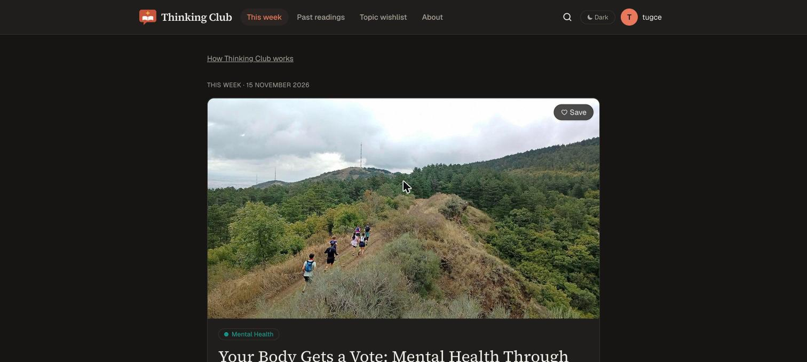
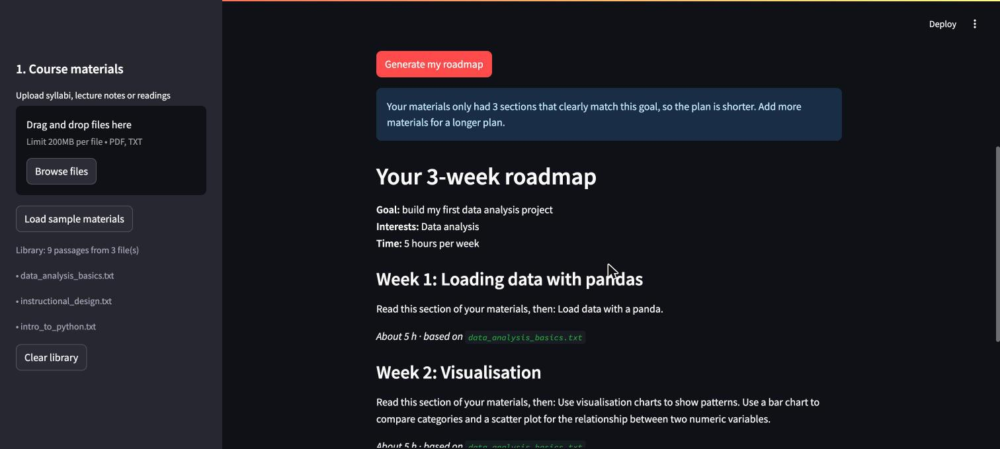
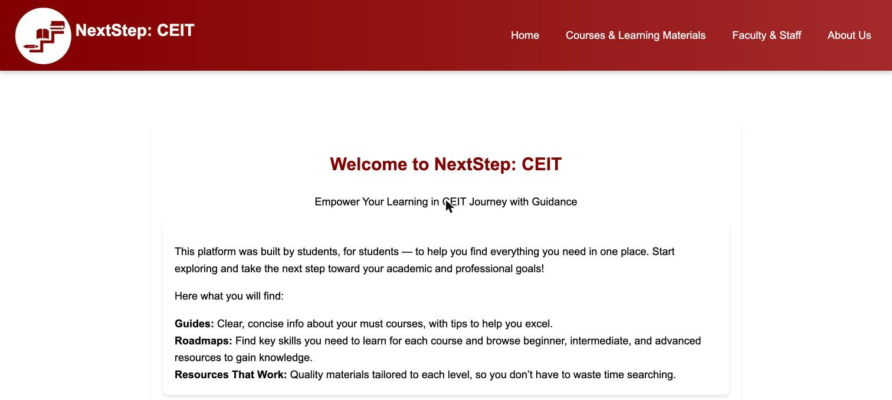

Projects
Things I have built and designed. Every project links to something you can open: the live site, the code or the project files.
Learning with AI

Thinking Club
Let's read, learn and think together. I built Thinking Club so my friends and I could read new things and think them through together. Every Sunday a new, carefully sourced reading arrives. During the week members read it, say where they stand, highlight what struck them and discuss it. Each week someone else picks the next topic.
I designed and built it myself, including how readings are written with AI and checked against real sources.

RoadmapGeneratorAI
Turns a learner's own course materials into a week-by-week study plan. Every week is based on one passage from the learner's files and names its source, so the plan stays aligned with the course and can be checked. Runs locally with an open model, with no API key.
SuccessGuideAI
A study and career advisor for students. It answers questions such as "How can I do well in this course?" from the student's own syllabi and notes, cites the passages it used, and says clearly when it can only give general advice.
Websites

NextStepCEIT
A website by students, for students: course guides, learning roadmaps for each year and resources at beginner, intermediate and advanced level for students of Computer Education and Instructional Technology. It was planned with a project proposal and timeline, tested with student feedback and improved based on it.
METU Personnel Department website
I developed and structured the department's official website, including sections for academic, administrative and international staff, students, forms and announcements, and published the digital Handbook for International Academic Staff. I worked with the department's IT unit on maintenance and updates.
Instructional design
Course projects from my degree. Each link opens the project files: design and evaluation reports, materials and recordings.
Online Occupational Health and Safety course
A 15-week online course with objectives, syllabus, weekly structure, materials, assessments and activities, designed on distance-education principles.
Proposal, syllabus, final report and course walkthrough video
Interactive teacher-training course
An interactive course that teaches teacher candidates to use ActivePresenter, developed with the ADDIE model: needs and learner analysis, design, usability testing, expert review and revision.
Multimedia learning projects
A procedural lesson (video, handout and QR quiz), a conceptual course on active digital citizenship with role-play and quizzes, and a gamified Storyline project, all revised after expert and peer evaluation.
Lesson and unit planning
Three 80-minute lessons for a 6th-grade ICT course based on the national curriculum, and a PyGame instructional unit for high-school students with video and print materials.
Lesson and unit plans · Instructional materials and analysis report